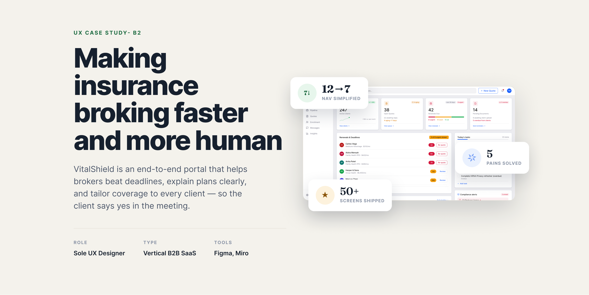

Vertical B2B SaaS · Case study
VitalShield — insurance broking, faster and more human
Sole UX Designer · Research, IA, Figma prototype
An end-to-end portal for health-insurance brokers. I turned three sharp user pains into core flows — a triage dashboard, a plan-comparison rater, and compliance-safe personalization — all backed by a reusable design system.
13
screens across the full broker flow
3→1
pains resolved into one clear system
